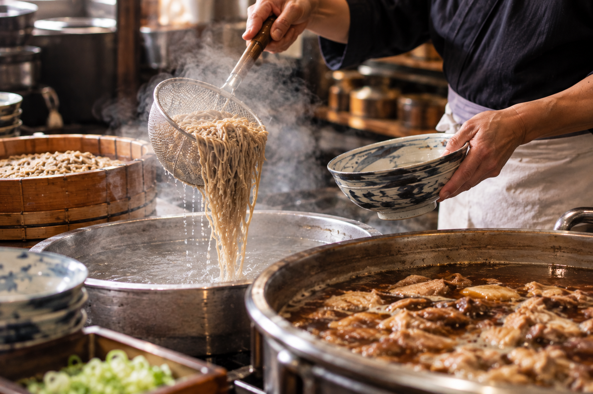

おすすめメニュー

JR羽前山辺駅から徒歩約3分｜山形の名物文化を味わう
「肉そば すみどや」は、山辺町の駅近くに店舗を構える、こだわりの肉そば専門店（食堂）です。
親鶏からじっくり引き出した深いコクと旨味のある醤油ベースのつゆに、しっかりとしたコシのあるそばを合わせました。お一人様でのランチから、ご家族でのゆったりとしたお食事まで幅広くご利用いただけます。

JR左沢線「羽前山辺駅」から徒歩約3分（約184m）。アクセス良好で立ち寄りやすい立地です。
15台分の駐車場を完備。お車でお越しの方も安心してお食事をお楽しみいただけます。
カウンター席、テーブル席、座敷を完備。お一人様からご家族連れまで快適にお過ごしいただけます。
| 店名 | 肉そば すみどや（にくそば すみどや） |
|---|---|
| 住所 | 〒990-0301 山形県東村山郡山辺町山辺232（232-2） |
| 電話番号 | 023-676-4433 |
| 営業時間 |
11:00～15:00（L.O.14:30） ※夜営業（17:00～22:00）の情報もあり。状況により異なる場合があります。 |
| 定休日 |
水曜日（祝日の場合は翌日） ※定休日なしとの情報もあり。ご来店前の確認をおすすめします。 |
| ジャンル | そば、ラーメン、食堂 |
| ご予算目安 | 1,000円以内 |
| 席・空間 | カウンター席、テーブル席、座敷あり |
| 駐車場 | あり（15台） |
| アクセス | JR左沢線「羽前山辺駅」から徒歩約3分 |